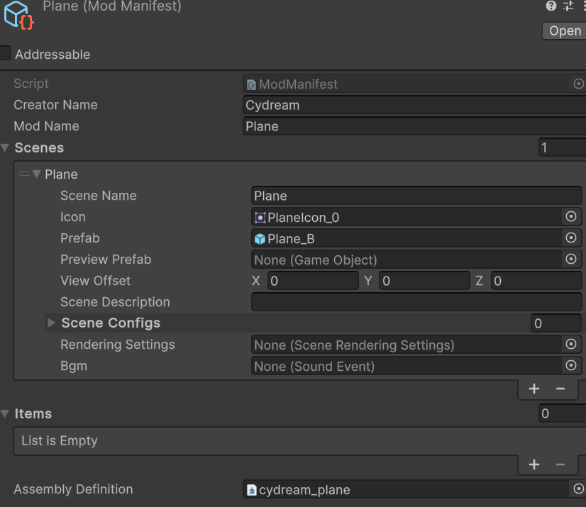

Modding Overview
Voxel Playground mods are assembled from .vox assets, prefabs, manifest entries, and optional TypeScript gameplay scripts.
Import voxel assets
Use the asset import tooling to convert source .vox files into prefabs:
- Drag the
.voxfile into the import workflow. - Pick the correct content type.
- Generate the prefab.
- Add the generated prefab to
manifest.asset.


Add gameplay logic with TypeScript
When an imported prefab needs behavior:
- Create or edit the mod's files in
Scripts/. - Export the gameplay class from
Scripts/index.ts. - Add
JsComponentProxyto the prefab root or the specific child object that owns the behavior. - Set the proxy to the exported class name.
- Use
JsPropertiesto pass object references, transforms, audio objects, or other proxies into the script.
This replaces the older manual workflow that relied on custom C# gameplay scripts inside the mod folder.
Validate and export
Before packaging:
- Run
npm run lint:mod -- <modId>fromPuer-Project. - Confirm all shipped prefabs are listed in
manifest.asset. - Build and install through the Mod Exporter.
Topic guides
- Scene Configuration: Build environments and configure scene prefabs.
- Character Configuration: Create characters and hook up behavior where needed.
- Item Tutorials: See complete examples of TypeScript-driven weapons and tools.